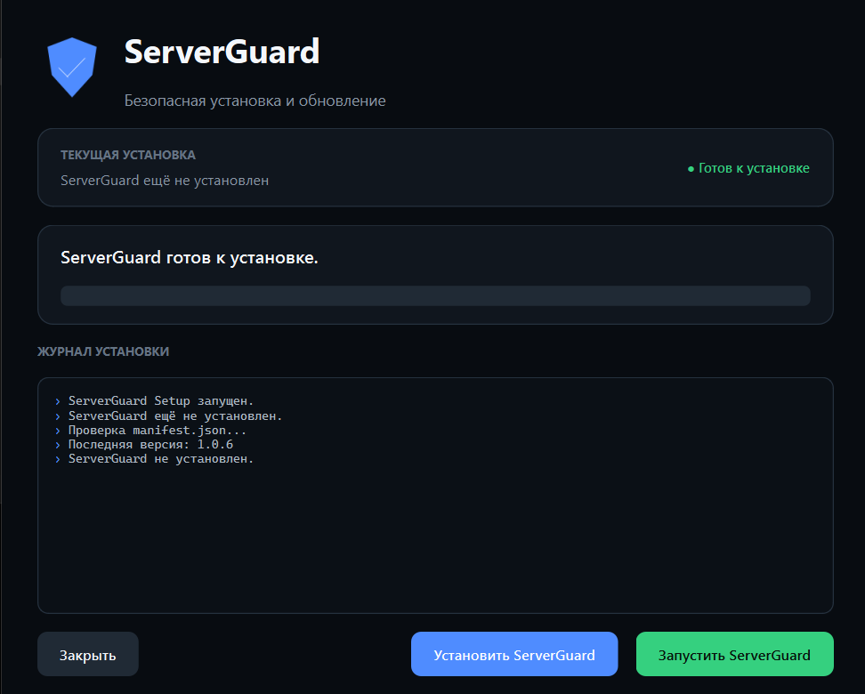
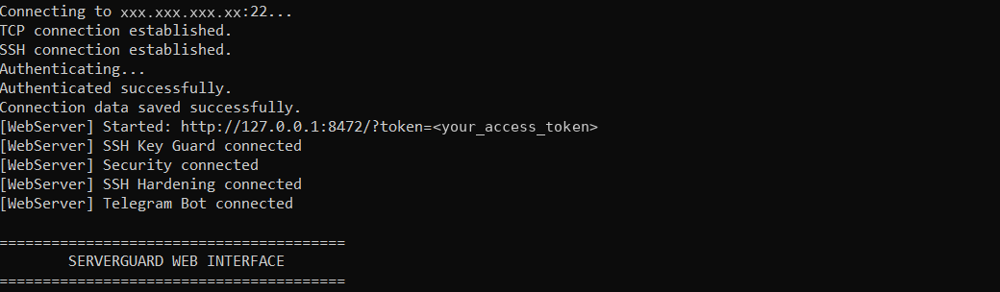
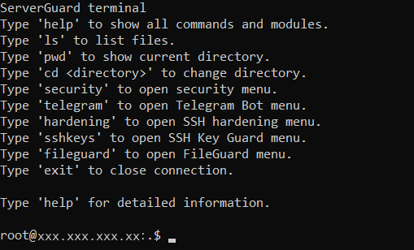
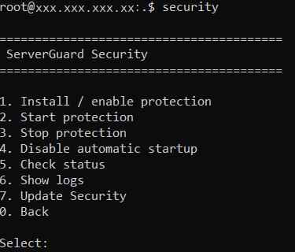
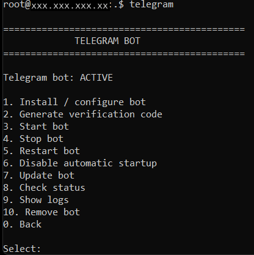
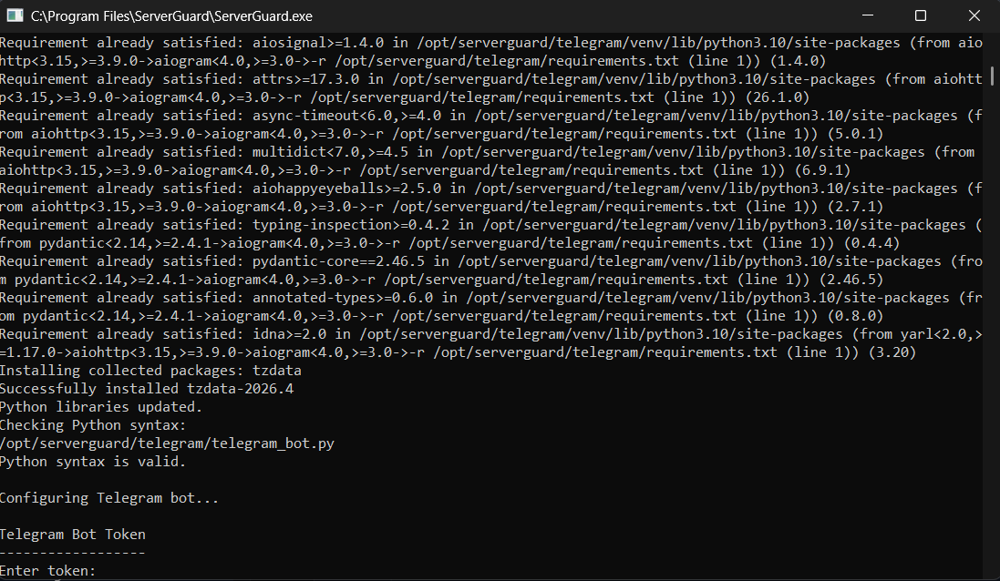
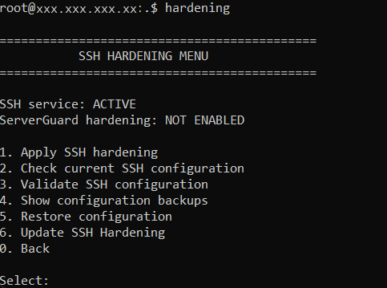
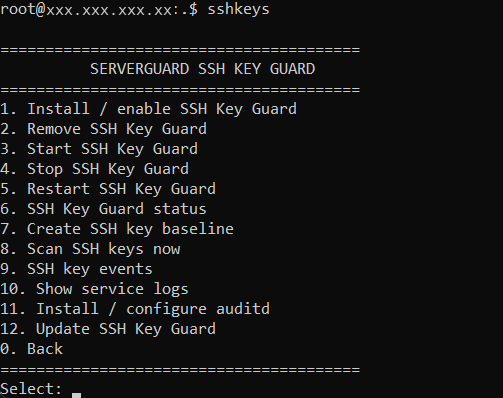
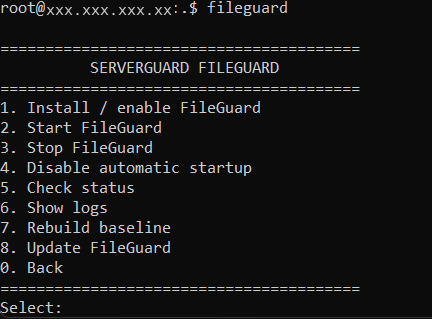

Protection runs on the server
Modules are installed on the Linux server and operate independently of the client, so detection and response keep running whether or not your computer is switched on.
ServerGuard is a Windows desktop application for managing, monitoring and protecting Linux servers over SSH. It combines security tools, best practices and a convenient interface in a single solution.
Harden your servers, prevent attacks and manage configuration with ease.
Modules are installed on the Linux server and operate independently of the client, so detection and response keep running whether or not your computer is switched on.
Connect once over SSH, then open and manage every module from the ServerGuard terminal — Security, Hardening, key and file monitoring and Telegram.
SSH Hardening reviews and manages security-related OpenSSH configuration. The policy is written to a separate configuration fragment, validated and backed up before it is applied.
Protocol 2
PermitRootLogin no
PasswordAuthentication no
PubkeyAuthentication yes
KexAlgorithms curve25519-sha256,ecdh-sha2-nistp256
Ciphers chacha20-poly1305@openssh.com,aes256-gcm@openssh.com
MACs hmac-sha2-512,hmac-sha2-256Each module targets one class of events and is managed from the same SSH connection.
Download the installer and run the setup wizard on your Windows computer. Installation →
Enter the server IP, SSH port, username and password, then connect. Connection →
Open a module from the terminal and enable the protection you need on the server. Modules →
Invoke-WebRequest -Uri "https://serverguard.dev/download/latest" -OutFile "ServerGuardSetup.exe"Make sure the following requirements are available before starting the test.
A Windows computer with ServerGuard installed.
A Linux server accessible through SSH.
IP address, SSH port, username and password or another supported authentication method.
Testing should preferably be performed on a separate test server rather than production.
Download and install the ServerGuard application on your Windows computer.
Download the latest ServerGuard installer from the official website.
Download ServerGuard ↗Launch the installer and follow the installation wizard.

After installation, launch ServerGuard from the desktop or Start Menu.
ServerGuard is also available as a Linux desktop application. Download version 1.1.8 for x86_64 / AMD64 from the Linux downloads page. Choose a DEB, RPM or TAR.ZST package for your distribution.
Before running an installation command, open a terminal and change to the directory containing the downloaded package.
sudo apt install ./serverguard_1.1.8-1_amd64.debsudo dnf install ./serverguard-1.1.8-1.x86_64.rpmsudo pacman -U ./serverguard-1.1.8-1-x86_64.pkg.tar.zstEnter the connection information for the test server in the main ServerGuard window.
IP
Linux server IP address
Port
SSH port, normally 22
Username
Linux user used for SSH authentication
Password
Password for the selected Linux account
Use the temporary test credentials provided for the evaluation. Do not publish real passwords, private SSH keys or other sensitive credentials in screenshots or documentation.

Specify IP, Port, Username and Password using the credentials supplied for testing.
Start the connection and wait for ServerGuard to authenticate through SSH.
After connecting, the ServerGuard terminal provides access to server commands and security modules.

help
ls
pwd
cd <directory>
nano <file>
security
telegram
hardening
sshkeys
fileguard
ports
web install
exithelpShow the complete ServerGuard help page, including general commands, modules, Port Manager and troubleshooting.
help
Show available commands.
ls
List files in the current directory.
pwd
Show the current directory.
cd
Change the current directory.
nano <file>
Edit a remote file with the ServerGuard editor.
security
Open the Security module.
telegram
Open the Telegram Bot module.
hardening
Open SSH Hardening.
sshkeys
Open SSH Key Guard.
fileguard
Open FileGuard.
ports
Open the firewall and protected-port manager.
web install
Install the local web interface on the server.
exit
Close the SSH connection.
The Security module provides protection against repeated failed SSH authentication attempts and allows the protection service to be managed.

========================================
ServerGuard Security
========================================
1. Install / enable protection
2. Start protection
3. Stop protection
4. Disable automatic startup
5. Check status
6. Show logs
7. Update Security
0. BackInstall the Security protection component and enable its configuration.
Start or stop the protection service when required during testing.
Check whether the protection service is installed and running.
Review security events and service logs generated during testing.
Configure whether the protection service starts automatically with the system.
Update the installed Security module.
The Telegram module allows ServerGuard to send security notifications from the Linux server.

============================================
TELEGRAM BOT
============================================
Telegram bot: ACTIVE
1. Install / configure bot
2. Generate verification code
3. Start bot
4. Stop bot
5. Restart bot
6. Disable automatic startup
7. Update bot
8. Check status
9. Show logs
10. Remove bot
0. Back
Never publish the Telegram bot token or other authentication credentials in screenshots, public repositories or documentation.
SSH Hardening provides tools for reviewing and managing security-related SSH configuration.

SSH configuration changes can affect remote access. Perform hardening tests only on the designated test server and keep an alternative access method available when possible.
SSH Key Guard monitors SSH authorized keys and generates security events when changes are detected.

Install SSH Key Guard on the Linux server.
Scan authorized SSH keys and detect changes.
Create or update the known key baseline.
Review detected SSH key security events.
Update the SSH Key Guard component.
Remove the module from the test server.
FileGuard provides file-related server management capabilities through the ServerGuard interface.

Use FileGuard to work with server files through the ServerGuard interface and available SFTP/server tools.
The following sequence can be used as a structured evaluation of ServerGuard.
Connect ServerGuard to the provided Linux test server through SSH.
Run help, pwd
and ls and verify that
terminal commands work correctly.
Install or enable the Security module, start protection and check its status.
Review module logs and verify that security events are recorded.
Install/configure the Telegram Bot, generate the verification code and verify notifications.
Run a scan, create a baseline and review the generated audit information.
Review SSH Hardening and FileGuard according to the available test scenario.
Check statuses, logs, generated events and Telegram notifications.
If something does not work as expected, check the following areas first.
Your feedback helps improve the project, identify issues and develop new features.